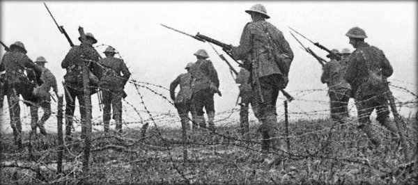

SERIES OF POLITICAL EVENTS LEADING TO THE FIRST WORLD WAR

Holy Alliance, 1815
Prussia, Austria, and Russia joined together to combat the spread of
republicanism in Europe and increase the influence of Christianity on
European politics by trying to secure the divine right of kings.
Source
Crimean War, 1853-65
Great Britain, France, and the Ottoman Empire joined forces and managed
to defeat Russia over territorial disputes. Russia's allies did not
intervene, Austria going so far as to capitalize from the Russian defeat
and annexing some land, causing the alliance to officialy dissolve.
Austro-Prussian War, 1866
A territorial dispute over the occupation of conquered Danish lands
lead to a short conflict between the two nations. Prussia and its allies
won the war, annexing many German states and ending Austrian hegemony
over the remainder of them. This also lead to the formation of
Austria-Hungary.
Franco-Prussian War, 1870-71
France declared war on the kingdom of Prussia in order to curb their
power, but Prussia was able to decisively defeat the French army
numerous times. The war ended when France surrendered, losing the
territory of Alsace-Lorraine to the newly unified German Empire.
League of Three Emperors, 1872
Fearing the combined might of Austria-Hungary, Russia, and France, the
young German Empire sought to ally itself with two out of three of the
potential threats. Thus, they joined the alliance with Austria-Hungary
and Russia.
Russo-Turkish War, 1877-78
Balkan nationalism sparked a series of violent uprisings agains their
Ottoman overlords. Russia, seeking to help their fellow Orthodox Christians
and slavs, as well as wanting to recoup their losses from the Crimean War,
came to their aid and defeated the Turks. This influx of Russian influence
in the Balkans angered the Austrians, causing the league to deteriorate.
Dual Alliance, 1879
Germany and Austria signed an agreement in which they would support
the other in the event of a war with Russia, but they would remain
neutral if either party when to war with another European power. It was
meant to maintain peace, as Germany didn't think Russia would want to wage
war against both countries.
French Conquest of Tunisia, 1881
Great Britain, Italy, and France all vied for control of the province
of Tunisia. A few years prior, Great Britain agreed to allow France to
occupy Tunisia if the island of Cyprus came under British control. France
conquered Tunisia, which angered Italy, who still had aspirations there.
Triple Alliance, 1882
After losing Tunisia to France, Italy was in need of allies, and was
only able to turn to their old enemy, Austria-Hungary. Italy joined
the alliance of Germany and Austra-Hungary, but Italy's position in the
alliance was questionable at best.
Franco-Russian Alliance, 1892
France and Russia had a mutual dislike of Germany, thus they wished
to ally with eachother in order to counterract both the growth of
German power and the formation of the Triple Alliance.
Entente Cordiale, 1904
A series of agreements were signed between France and Great Britain to
settle any colonial disputes they had in Africa. As well, they were
both in dire need of allies should a European war break out. This
also marked the of end the nearly one-thousand years of conflicts between
the two countries.
Anglo-Russian Convention, 1907
An agreement between Russia and Great Britain in which they settled their
long rivalry of competing for control over central Asia due to the need
for military alliances to compete with the Triple Alliance. With this
agreement, the
Triple Entente between France, Britain, and
Russia was formed.
Balkan Wars, 1912-13
The newly independent Balkan nations wished to free their ethnic population
from Ottoman rule, joining together to create the Balkan League. They
were victorious against the Ottoman Empire, removing most of its
European territory.